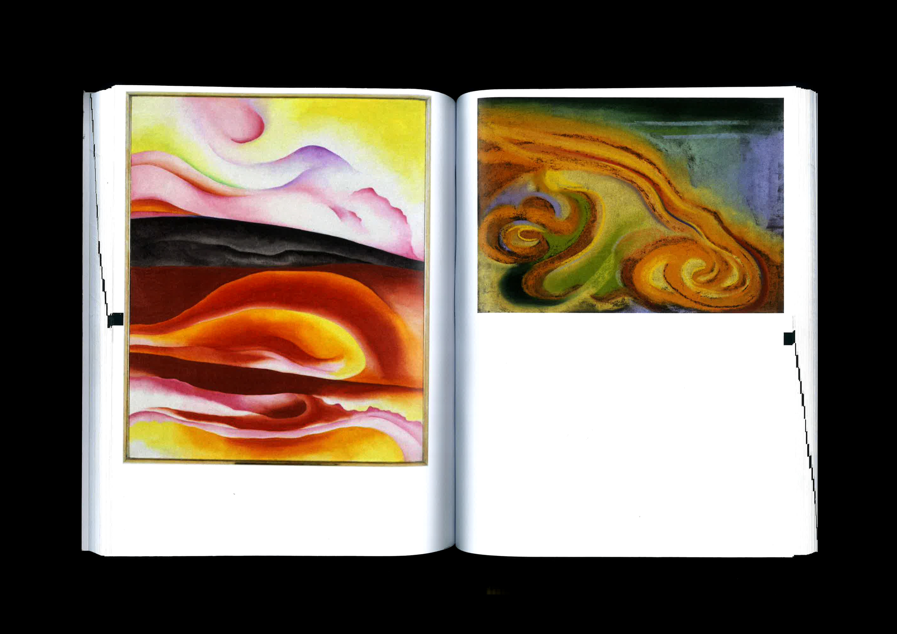
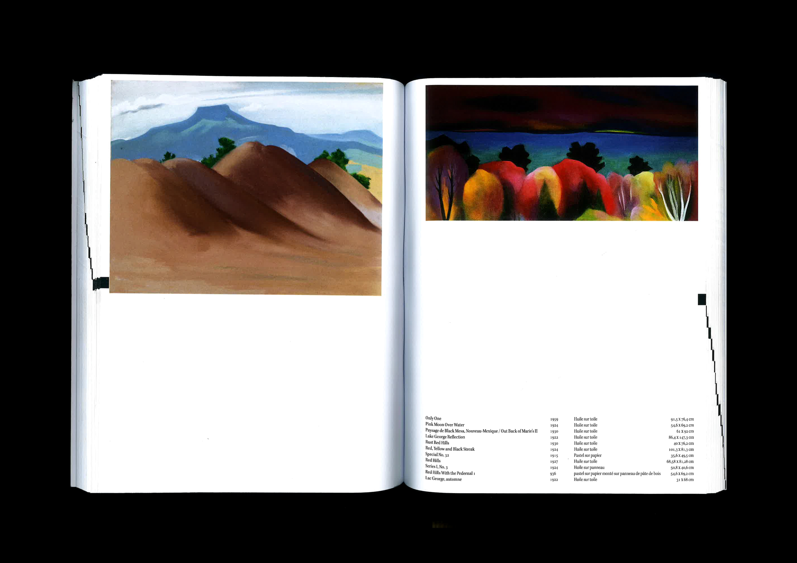
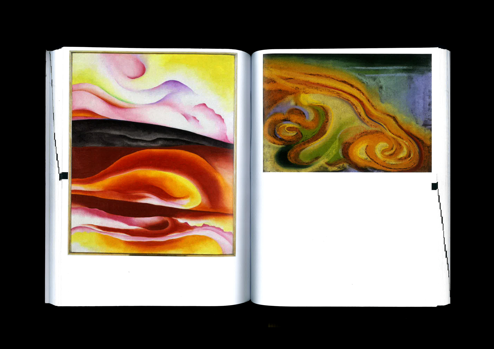
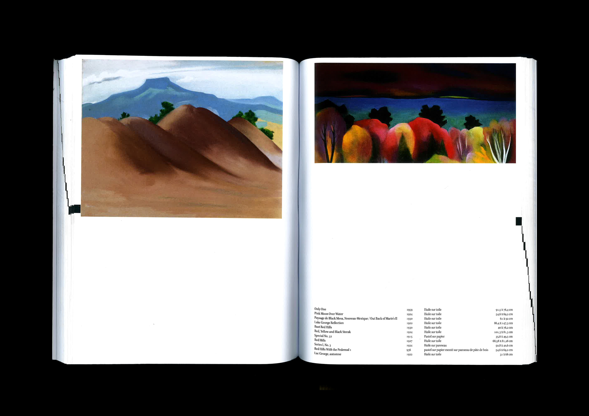

Édition
19 x 25 cm
188 pages
Etel Adnan, née au Liban en 1925 dans une culture conservatrice, a décidé de voyager, d’étudier et de faire sa vie avec une femme Simone Fattal. Ainsi, elle a déjoué le rôle du genre féminin et ses attentes qui lui étaient attribuées.
Pour Etel Adnan, la conception et la représentation du paysage est centrale dans son œuvre. En effet, elle transcrit un rapport au monde particulier, un ancrage profond dans ce qui entoure l’artiste. Il y a, chez Adnan, une admiration du monde et une quête de se sentir au plus proche de celui-ci.
Adnan a recours à l’abstraction, à la simplification et cet ouvrage a pour but de rassembler, au mieux possible, des artistes femmes qui, à un moment de leur carrière, ont représenté un paysage. Longtemps méconnues dans l’histoire de l’art, elles ont eu droit à une exposition au Centre Pompidou « Elles font l’abstraction » (19 mai 2021 – 23 août 2021).
 


